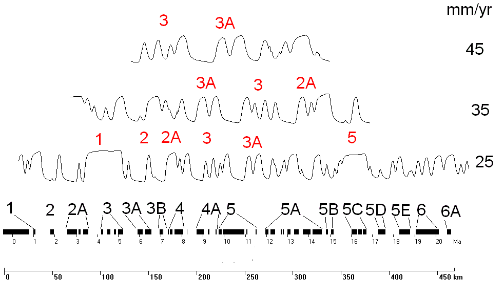

|
 |
The black line at the bottom shows the
magnetic polarity scale, with the anomalies out
to 20 Ma labeled above the line, and the ages
below the line (Cande
and Kent, 1995). This shows the pattern
that would be to the right of the ridge; the
pattern would be symmetrical to the left.
Solid black is normal polarity, when the
measured anomaly will be positive.
The three profiles ID the
anomalies in red above each profile.
- The first step is to look
for the symmetrical pattern
about the ridge, which occurs
here only on the lowest profile.
Depending on ridge orientation
and latitude, the degree of
symmetry varies. The
anomaly at the ridge should be
among the largest positive
values. You are
also looking for the other
anomalies as mirror images about
the ridge crest. While not
labeled here, anomalies 2 and 2A
both appear on the left side of
the profile, as does the
small Jaramillo event with
normal polarity about 1 Ma.
- The next step is to look for
distinctive anomalies.
Note that Anomaly 3 has 4
closely spaced peaks, and 3A has
two.
- Anomaly 5 is a very long
normal, which can be confused
for a ridge but the pattern is
not symmetrical about it.
- The middle profile is from
the left side of the ridge,
which you must consider if you
cannot get a good match from the
pattern to the right. If
the profiles are in the correct spatial
relationships, and do not match
up, there are
transform faults between
profiles.
- You cannot always get a
simple correlation between
adjacent survey lines because:
- Transform faults
can occur
between adjacent
survey lines.
- Spreading rates
vary with
distance from
the Euler pole,
so the distance
between the same
pair of
anomalies also
varies.
- You can get complexities
within a single profile, if the
survey line crossed a transform
fault, or if there was a ridge
jump.
- With slow spreading ridges,
or noisy real world data,
closely spaced reversals may be
hard to pick out.
|